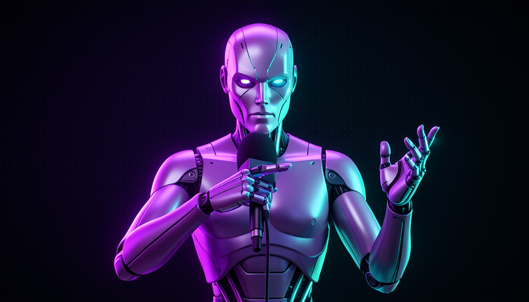

📖 Glossário vivo (os termos NOVOS deste módulo)
A Trilha 1 já fixou modelo, prompt, agente, skill, codebase e harness. Aqui entram os termos próprios da grill-me. Volte sempre que precisar:
🔥 O que a grill-me faz
🧠 Imagine assim: você vai defender uma ideia numa banca. Em vez de alguém que sorri e aprova tudo, senta à sua frente um entrevistador exigente que pergunta "e se o usuário fizer X?", "por que não usar Y?", "o que acontece quando isso falha?". Você sai da sala com a ideia mais forte — porque os furos apareceram antes, não depois. A grill-me transforma a IA exatamente nesse entrevistador.
A grill-me é uma skill que faz uma coisa só: transforma o modelo num entrevistador adversarial. Em vez de você dar uma ordem e a IA obedecer, a relação se inverte: ela pergunta, você responde. Ela faz perguntas, levanta ideias que você não tinha considerado, aponta dependências entre as decisões — e segue assim até vocês dois chegarem a um shared understanding sobre o que vai ser feito.
Pocock descreve essa skill como "unreasonably effective" — absurdamente eficaz pra algo tão pequeno. O porquê é simples: modelos modernos têm uma tendência a serem agradáveis demais. Se você diz "minha ideia é X", a IA tende a elogiar e tocar pra frente, mesmo que X tenha um buraco gigante. A grill-me quebra esse vício de propósito: ela manda a IA discordar, achar o que está faltando e te confrontar. Erro comum: achar que isso é só "a IA fazendo perguntas". A diferença está na postura — adversarial, não puxa-saco — e na disciplina de uma pergunta por vez (você verá o porquê no tópico 3).
O fluxo normal: você manda, a IA faz. A grill-me inverte: a IA pergunta, você esclarece.

⚠️ Erro comum de iniciante
Confundir grill-me com "modo brainstorm fofinho". Se a IA está concordando com tudo o que você diz, a skill não está funcionando. O valor inteiro vem da postura adversarial: ela tem que te confrontar, não te bajular.
Em 1 frase: grill-me = a IA vira entrevistadora adversarial e te interroga sobre o plano até vocês concordarem em tudo.
Indo mais fundo (opcional): por que "grill"?
Em inglês, to grill someone é uma gíria pra "interrogar com firmeza" — como um detetive ou um repórter que não solta a presa. A palavra vem de "grelhar": deixar a pessoa "no fogo" até a verdade aparecer. O nome da skill carrega essa intenção de propósito: não é uma conversa amena, é um interrogatório produtivo sobre o seu próprio plano.
🔄 Substituir o plan mode
🧠 Imagine assim: dois jeitos de planejar uma viagem. No primeiro, a agência te entrega um roteiro pronto e você só diz "ok" — mas se ela entendeu errado o seu destino, você só descobre no aeroporto. No segundo, a agência te entrevista antes ("quer praia ou montanha? viaja com criança? qual o orçamento?") e o roteiro nasce já alinhado. A grill-me é o segundo jeito.
Muitos agentes têm um plan mode: a IA lê o seu pedido, escreve um plano e espera você aprovar antes de mexer no codebase. É útil, mas tem uma falha: o plano é um monólogo. A IA adivinha o que você quis dizer e cospe um documento. Se ela entendeu errado um detalhe lá no começo, todo o plano fica torto — e você só percebe relendo tudo.
Pocock usa a grill-me no lugar do plan mode. A frase dele resume bem: "here's my idea, interview me, let's reach shared understanding, flush out weirdness before we implement" — eis a minha ideia, me entreviste, vamos chegar a um entendimento compartilhado, vamos espremer pra fora as esquisitices antes de implementar. A diferença chave: o plan mode é a IA presumindo; a grill-me é a IA perguntando. Em vez de um plano que pode estar errado, você constrói o entendimento junto, em diálogo. O porquê é que mal-entendidos custam caro: um pressuposto errado vira código errado vira retrabalho.
Recuperação rápida: qual é a diferença central entre plan mode e grill-me?
Em 1 frase: plan mode é a IA presumindo o plano sozinha; grill-me é vocês construindo o entendimento em diálogo, antes de codar.
✂️ Curta e poderosa (4-5 frases)
🧠 Imagine assim: uma boa instrução de chefe não tem 10 páginas. Tem três linhas certeiras: "ligue pra cada cliente, um por vez, e antes de cada ligação me diga o que você recomenda." A grill-me é assim — minúscula, mas cada frase carrega uma regra de comportamento que muda tudo.
A grill-me cabe em 4-5 frases. Cada frase é uma regra deliberada — não é texto de enfeite, é instrução densa. Repare em como cada parte faz um trabalho: "interview me relentlessly... until we reach a shared understanding" define o objetivo (entrevistar sem parar até o alinhamento). "Walk down each branch of the design tree, resolving dependencies between decisions one-by-one" dá o método: percorrer a design tree galho por galho. "For each question, provide your recommended answer" exige que a IA não só pergunte, mas também recomende a resposta dela (pra você ter um ponto de partida).
As duas últimas frases são o pulo do gato. "Ask the questions one at a time" — uma pergunta de cada vez. Sem isso, a IA despeja 12 perguntas de uma vez e você se perde; uma por vez mantém o foco e deixa cada resposta influenciar a próxima pergunta. E "if a question can be answered by exploring the codebase, explore the codebase instead" — se a IA pode responder olhando o código, ela olha o código em vez de te perguntar. Isso evita que ela te interrogue sobre coisas que ela mesma consegue descobrir. O erro comum aqui é "melhorar" a skill inflando o texto: quanto mais você adiciona, mais o comportamento se dilui. A força está na concisão. Abaixo, o texto exato pra copiar:
Interview me relentlessly about every aspect of this plan until we reach a shared understanding. Walk down each branch of the design tree, resolving dependencies between decisions one-by-one. For each question, provide your recommended answer. Ask the questions one at a time. If a question can be answered by exploring the codebase, explore the codebase instead.
Tradução livre: "Me entreviste sem trégua sobre cada aspecto deste plano até chegarmos a um entendimento compartilhado. Percorra cada galho da árvore de decisões, resolvendo as dependências entre as decisões uma a uma. Para cada pergunta, dê a sua resposta recomendada. Faça as perguntas uma de cada vez. Se uma pergunta puder ser respondida explorando o codebase, explore o codebase em vez de perguntar."
Cinco frases, cinco regras. Roxo = as que mais mudam o comportamento.
Em 1 frase: são 4-5 frases, cada uma uma regra — não infle o texto, a força está na concisão.
🎯 Alinhar antes de codar
🧠 Imagine assim: um carpinteiro experiente mede duas vezes e corta uma. O custo de medir é minutos; o custo de cortar errado é uma tábua perdida e horas de retrabalho. A grill-me é a sua fita métrica antes do corte: você gasta uns minutos respondendo perguntas pra não desperdiçar uma hora de código errado.
O ganho central da grill-me é mover o alinhamento pra antes da implementação. A frase de Pocock — "flush out weirdness before we implement" — é literalmente isso: espremer pra fora as esquisitices antes de implementar. Toda decisão mal compreendida que vira código é cara: a IA escreve, você revisa, percebe que não era bem aquilo, manda refazer, ela refaz. Cada loop desses queima tempo e tokens. A grill-me corta esses loops na raiz, porque o entendimento já está fechado quando o código começa.
Há um efeito colateral valioso: ao responder as perguntas, você também descobre furos no seu próprio raciocínio. Muitas vezes a gente acha que tem uma ideia clara, mas ela só fica clara quando alguém pergunta "e nesse caso aqui?". A grill-me te força a pensar nos cantos que você pulou. Por isso ela é boa mesmo quando a IA não vai escrever o código no fim — só de passar pela entrevista, o seu plano melhora.
🔬 Exemplo resolvido: grill-me numa feature de "exportar relatório"
Você diz pra IA: "quero adicionar um botão de exportar relatório em PDF" e ativa a grill-me. Veja a entrevista (uma pergunta por vez, com recomendação):
- IA: "O PDF deve ser gerado no servidor ou no navegador? Recomendo no servidor, pra controlar a fonte e não depender do browser do usuário." — Você: "servidor."
- IA: "E quando o relatório estiver vazio — botão desabilitado ou PDF com aviso? Recomendo desabilitar, é mais claro." — Você: "PDF com aviso, o cliente quer registro."
- IA: "Vi no codebase que vocês já usam a lib
pdfkitem/reports. Reuso ela? Recomendo reusar." — Você: "sim." (ela explorou o código em vez de perguntar do zero)
Resultado: em 3 perguntas você fechou geração no servidor, comportamento do estado vazio e reúso da lib — três decisões que, descobertas no meio do código, custariam refação.
Em 1 frase: alguns minutos de entrevista no começo poupam horas de código errado depois.
🤝 Shared understanding
🧠 Imagine assim: dois músicos afinando antes do show. Não é o show ainda — é o momento em que os dois batem a mesma nota até soarem juntos. Só depois de afinados eles tocam. "Shared understanding" é essa afinação entre você e a IA.
O destino da grill-me tem nome: shared understanding. É o estado em que você e a IA enxergam o problema do mesmo jeito — sem pressupostos escondidos esperando pra explodir. A entrevista não acaba quando a IA cansa; acaba quando o entendimento converge. É por isso que a skill diz "until we reach a shared understanding": o critério de parada é o alinhamento, não um número fixo de perguntas.
David (o colega de Pocock no transcript) tem uma variação muito usada do mesmo princípio: "describe my vision, list out the 10 most consequential decisions (software design / architectural / product) that will shape this project, and interview me until you understand 98%." — descreva a minha visão, liste as 10 decisões mais consequentes que vão moldar o projeto, e me entreviste até entender 98%. Repare na engenharia: forçar a IA a listar as 10 decisões mais importantes garante que a entrevista ataque o que pesa, não detalhes triviais; e o "98%" dá uma meta concreta de convergência. É a mesma família da grill-me — adversarial, em diálogo, até o alinhamento. Você verá esse prompt completo, pronto pra copiar, no módulo 5.2 da trilha de Soluções.
Em 1 frase: o critério de parada não é o número de perguntas — é vocês dois enxergarem a mesma coisa.
🛠️ Adaptar pra você
🧠 Imagine assim: uma receita base de pão. Funciona pra todo mundo, mas cada padeiro ajusta o sal, a hidratação, o tempo de forno pro seu forno. A grill-me é a receita base — copie ela, use por uma semana, e só então tempere do seu jeito.
A grill-me é um ponto de partida, não um dogma. Como ela é só uma skill de texto, você pode salvá-la no seu projeto e adaptá-la. Lembre da regra de ouro do tópico 3: ajuste com parcimônia, porque inflar dilui. Alguns ajustes que cabem sem estragar o efeito: pedir um resumo do entendimento ao final ("quando terminarmos, escreva um parágrafo do que combinamos"); limitar o escopo ("foque só nas decisões de arquitetura"); ou definir um teto ("máximo 8 perguntas"). Mas comece copiando o texto exato — ganhe a intuição antes de mexer.
Vale lembrar a filosofia de Pocock que atravessa toda a trilha: ele prefere procedures e quer estar no volante — "I know my skills, I don't want to delegate my thinking" (eu conheço minhas skills, não quero delegar o meu pensamento). A grill-me encaixa nisso perfeitamente: ela não tira você do comando, ela afia o seu comando. E ela é o primeiro elo de um encadeamento que você vai montar no próximo módulo: grill-me → PRD → issues. Em vez de despejar tudo de uma vez, você usa a grill-me pra alinhar, transforma o alinhamento num PRD, e o PRD em tarefas — sempre com você no volante.
Indo mais fundo (opcional): grill-me vs. "superpowers" (modelo no controle)
No transcript, Pocock contrasta o estilo dele com o do projeto "superpowers" (Obra), que prefere o oposto: o modelo no controle, com a IA decidindo o caminho. Pocock fica no extremo do humano no controle: esconde a maioria das descrições da IA e mantém o conhecimento no humano. A grill-me é a expressão dessa escolha — a IA pergunta, mas quem decide é você. Não existe "certo" universal aqui; é uma preferência de onde você quer o volante. Como iniciante, começar com o humano no controle costuma ensinar mais.
Recuperação rápida: qual ajuste na grill-me é arriscado, segundo o módulo?
Em 1 frase: copie o texto exato primeiro, ganhe a intuição, e só então tempere com parcimônia.
🧾 Resumo do Módulo
Próximo módulo:
3.6 — Encadear skills + DRY humano: como ligar grill-me → PRD → issues num pipeline de pensamento, com você no volante.